Download Statistics
Documents & Download Counts
My theses, presentations, and other documents, with the number of times their download links have been followed.
— documents · — download clicks in total.
Documents
Sort by:
- Bachelor thesis
- Academic CV
- Empirical Bernstein stopping rule
- DPG Spring Meeting poster
- Bachelor thesis presentation
- No documents match your search.
Download counts need JavaScript to load.